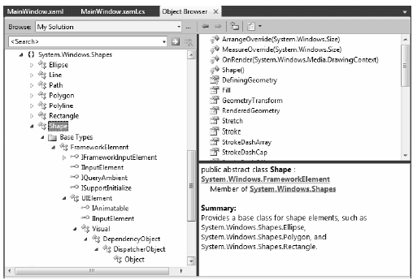
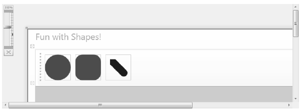
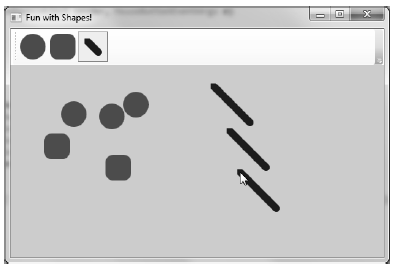
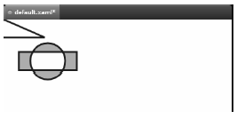
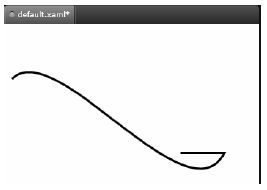

Members of the System.Windows.Shapes namespace provide the most straightforward, most interactive, yet most memory-intensive way to render a two-dimensional image. This namespace (defined in the PresentationFramework.dll assembly) is quite small and consists of only six sealed classes that extend the abstract Shape base class: Ellipse, Rectangle, Line, Polygon, Polyline, and Path.
Create a new WPF Application named RenderingWithShapes. Now, if you locate the abstract Shape class in the Visual Studio 2010 object browser (see Figure 29-1) and expand each of the parent nodes, you can see that each descendent of Shape receives a great deal of functionality up the inheritance chain.
Figure 29-1 The Shape base class receives a good deal of functionality from its parent classes
Now, given your work in the previous two chapters, some of these parent classes may ring a bell. Recall, for example, that UIElement defines numerous methods to receive mouse input and deal with drag-and-drop events, while FrameworkElement defines members to deal with sizing, tooltips, mouse cursors, and whatnot. Given this inheritance chain, be aware that when you render graphical data using Shape derived classes, the objects are just about as functional (as far as user interactivity is concerned) as a WPF control!
For example, determining if the user has clicked on your rendered image is no more complicated than handling the MouseDown event. By way of a simple example, if you authored the following XAML of a Rectangle object:
<Rectangle x:Name="myRect" Height="30" Width="30" Fill="Green" MouseDown="myRect_MouseDown"/>
you could implement a C# event handler for the MouseDown event that changes the rectangle’s background color when clicked:
private void myRect_MouseDown(object sender, MouseButtonEventArgs e) { // Change color of Rectangle when clicked. myRect.Fill = Brushes.Pink; }
Unlike with other graphical toolkits you may have used, you do not need to author a ton of infrastructure code that manually maps mouse coordinates to the geometry, manually calculates hittesting, renders to an off-screen buffer, and so forth. The members of System.Windows.Shapes simply respond to the events you register with, just like a typical WPF control (Button, etc).
The downside of all this out-of-the-box functionality is that the shapes do take up a fair amount of memory. Again, if you’re building a scientific application that plots thousands of points on the screen, using shapes would be a poor choice (essentially, it would be about as memory-intensive as rendering thousands of Button objects!). However, when you need to generate an interactive 2D vector image, shapes are a wonderful choice.
Beyond the functionality inherited from the UIElement and FrameworkElement parent classes, Shape defines a number of members for each of the children; some of the more useful ones are shown in Table 29-1.
Table 29-1. Key Properties of the Shape Base Class
| Properties | Meaning in Life |
|---|---|
| DefiningGeometry | Returns a Geometry object that represents the overall dimensions of the current shape. This object only contains the plot points that are used to render the data, and has no trace of the functionality from UIElement or FrameworkElement. |
| Fill | Allows you to specify a “brush object“ to render the interior portion of a shape. |
| GeometryTransform | Allows you to apply transformations to a shape, before it is rendered on the screen. The inherited RenderTransform property (from UIElement) applies the transformation after it has been rendered on the screen. |
| Stretch | Describes how to fill a shape within its allocated space, such as its position within a layout manager. This is controlled using the corresponding System.Windows.Media.Stretch enumeration. |
| Stroke | Defines a brush object, or in some cases, a pen object (which is really a brush in disguise) that is used to paint the border of a shape. |
| StrokeDashArray, StrokeEndLineCap, StrokeStartLineCap StrokeThickness | These (and other) stroke-related properties control how lines are configured when drawing the border of a shape. In a majority of cases, these properties will configure the brush used to draw a border or line. |
Note If you forget to set the Fill and Stroke properties, WPF will give you “invisible” brushes and therefore the shape will not be visible on the screen!
Later in this chapter, you will learn to use Expression Blend and Expression Design to generate XAML descriptions of graphical data. For now, we will build a WPF application that can render shapes using XAML and C#, and while doing so, learn a bit about the process of hit-testing. First of all, update the initial XAML of the <Window> to define a <DockPanel>, containing a (now empty) <ToolBar> and a <Canvas>. Note that we have given each contained item a fitting name via the Name property.
<DockPanel LastChildFill="True"> <ToolBar DockPanel.Dock="Top" Name="mainToolBar" Height="50"> </ToolBar> <Canvas Background="LightBlue" Name="canvasDrawingArea"/> </DockPanel>
Now, populate the<ToolBar> with a set of <RadioButton> objects, each of which contains a specific Shape derived class as content. Notice that each <RadioButton> is assigned to the same GroupName (to ensure mutual exclusivity) and is also given a fitting name:
<ToolBar DockPanel.Dock="Top" Name="mainToolBar" Height="50"> <RadioButton Name="circleOption" GroupName="shapeSelection"> <Ellipse Fill="Green" Height="35" Width="35" /> </RadioButton> <RadioButton Name="rectOption" GroupName="shapeSelection"> <Rectangle Fill="Red" Height="35" Width="35" RadiusY="10" RadiusX="10" /> </RadioButton> <RadioButton Name="lineOption" GroupName="shapeSelection"> <Line Height="35" Width="35" StrokeThickness="10" Stroke="Blue" X1="10" Y1="10" Y2="25" X2="25" StrokeStartLineCap="Triangle" StrokeEndLineCap="Round" /> </RadioButton> </ToolBar>
As you can see, declaring Rectangle, Ellipse, and Line objects in XAML is quite straightforward and requires little comment. Recall that the Fill property is used to specify a brush to paint the interior of a shape. When you require a solid-colored brush, you can simply specify a hard-coded string of known values and the underlying type converter (see Chapter 28) will generate the correct object. One interesting feature of the Rectangle type is that it defines RadiusX and RadiusY properties to allow you to render curved corners if you require.
Line represents its starting and end points using the X1, X2, Y1, and Y2 properties (given that height and width make little sense when describing a line). Here we are setting up a few additional properties that control how to render the starting and ending points of the Line, as well as how to configure the stroke settings. Figure 29-2 shows the rendered toolbar, as seen through the Visual Studio 2010 WPF designer:
Figure 29-2 Using Shapes as content for a set of RadioButtons
Now, using the Properties window of Visual Studio 2010, handle the MouseLeftButtonDown event for the Canvas, and the Click event for each RadioButton. In your C# file, your goal is to render the selected shape (a circle, square, or line) when the user clicks within the Canvas. First, define the following nested enum (and corresponding member variable) within your Window derived class:
public partial class MainWindow : Window { private enum SelectedShape { Circle, Rectangle, Line } private SelectedShape currentShape; ... }
Within each Click event handler, set the currentShape member variable to the correct SelectedShape value. For example, here is the implementation code for the Click event of the circleOption RadioButton. Implement the remaining two Click handlers in a similar manner:
private void circleOption_Click(object sender, RoutedEventArgs e) { currentShape = SelectedShape.Circle; }
With the MouseLeftButtonDown event handler of the Canvas, you will render out the correct shape (of a predefined size), using the X,Y position of the mouse cursor as a starting point. Here is the complete implementation, with analysis to follow:
private void canvasDrawingArea_MouseLeftButtonDown(object sender, MouseButtonEventArgs e) { Shape shapeToRender = null; // configure the correct shape to draw. switch (currentShape) { case SelectedShape.Circle: shapeToRender = new Ellipse() { Fill = Brushes.Green, Height = 35, Width = 35 }; break; case SelectedShape.Rectangle: shapeToRender = new Rectangle() { Fill = Brushes.Red, Height = 35, Width = 35, RadiusX = 10, RadiusY = 10 }; break; case SelectedShape.Line: shapeToRender = new Line() { Stroke = Brushes.Blue, StrokeThickness = 10, X1 = 0, X2 = 50, Y1 = 0, Y2 = 50, StrokeStartLineCap= PenLineCap.Triangle, StrokeEndLineCap = PenLineCap.Round }; break; default: return; } // Set top / left position to draw in the canvas. Canvas.SetLeft(shapeToRender, e.GetPosition(canvasDrawingArea).X); Canvas.SetTop(shapeToRender, e.GetPosition(canvasDrawingArea).Y); // Draw shape! canvasDrawingArea.Children.Add(shapeToRender); }
Note You may notice that the Ellipse, Rectangle, and Line objects being created in this method have the same property settings as the corresponding XAML definitions! As you might hope, we can streamline this code— but that requires an understanding of the WPF object resources, which we will examine in Chapter 30.
As you can see, we are testing the currentShape member variable to create the correct Shape derived object. After this point, we set the top-left value within the Canvas using the incoming MouseButtonEventArgs. Last but not least, we add the new Shape derived type to the collection of UIElement objects maintained by the Canvas. If you run your program now, you should be able to click anywhere in the canvas and see the selected shape rendered at the location of the left mouse-click.
With the Canvas maintaining a collection of objects, you may wonder how you can dynamically remove an item, perhaps in response to the user right-clicking on a shape. You can certainly do this, using a class in the System.Windows.Media namespace called the VisualTreeHelper. In Chapter 31, you will come to know the role of “visual trees“ and “logical trees“ in some detail. Until then, handle the MouseRightButtonDown event on your Canvas object, and implement the corresponding event handler like so:
private void canvasDrawingArea_MouseRightButtonDown(object sender, MouseButtonEventArgs e) { // First, get the X,Y location of where the user clicked. Point pt = e.GetPosition((Canvas)sender); // Use the HitTest() method of VisualTreeHelper to see if the user clicked // on an item in the canvas. HitTestResult result = VisualTreeHelper.HitTest(canvasDrawingArea, pt); // If the result is not null, they DID click on a shape! if (result != null) { // Get the underlying shape clicked on, and remove it from // the canvas. canvasDrawingArea.Children.Remove(result.VisualHit as Shape); } }
This method begins by obtaining the exact X,Y location the user clicked in the Canvas, and performs a hit-test operation via the static VisualTreeHelper.HitTest() method. The return value, a HitTestResult object, will be set to null if the user does not click on a UIElement within the Canvas. If HitTestResult is not null, we can obtain the underlying UIElement that was clicked via the VisualHit property, which we are casting into a Shape derived object (remember, a Canvas can hold any UIElement, not just shapes!) Again, you’ll get more details on exactly what a “visual tree” is in the next chapter.
Note By default, VisualTreeHelper.HitTest() returns the top-most UIElement clicked on, and does not provide information on other objects below that item (e.g., objects overlapping by Z-order).
With this modification, you should be able to add a shape to the canvas with a left mouse-click, and delete an item from the canvas with a right mouse-click! Figure 29-3 shows the functionality of the current example:
Figure 29-3 Fun with shapes
So far so good. At this point, you have used Shape derived objects to render content on RadioButtons using XAML and populate a Canvas using C#. We will add a bit more functionality to this example when we examine the role of brushes and graphical transformations. On a related note, a different example in this chapter will illustrate drag-and-drop techniques on UIElement objects. Until then, we will examine the remaining members of System.Windows.Shapes.
The current example used only three of the Shape derived classes. The remaining child classes (Polyline, Polygon, and Path) are extremely tedious to render correctly without the use of a tool like Expression Blend, simply because they require a large number of plot points to represent their output. You’ll use Blend in just a moment, but until then, here is an overview of the remaining Shapes types.
The Polyline type lets you define a collection of (x, y) coordinates (via the Points property) to draw a series of line segments that do not require connecting ends. The Polygon type is similar; however, it is programmed so that it will always close the starting and ending points and fill the interior with the specified brush. Assume you have authored the following <StackPanel> in the kaxaml editor, or better yet, in the custom XAML editor you created in Chapter 27:
<!-- Polylines do not automatically connect the ends --> <Polyline Stroke ="Red" StrokeThickness ="20" StrokeLineJoin ="Round" Points ="10,10 40,40 10,90 300,50"/> <!-- A Polygon always closes the end points--> <Polygon Fill ="AliceBlue" StrokeThickness ="5" Stroke ="Green" Points ="40,10 70,80 10,50" />
Figure 29-4 Polygons and polylines
Using the Rectangle, Ellipse, Polygon, Polyline, and Line types alone to draw a detailed 2Dvector image would be extremely complex, as these primitives do not allow you to easily capture graphical data such as curves, unions of overlapping data, and so forth. The final Shape derived class, Path, provides the ability to define complex 2D graphical data represented as a collection of independent geometries. Once you have defined a collection of such geometries, you can assign them to the Data property of the Path class, where this information will be used to render your complex 2D image.
The Data property takes a System.Windows.Media.Geometry derived class, which contains the key members described in Table 29-2.
Table 29-2. Select Members of the System.Windows.Media.Geometry Type
| Member | Meaning in Life |
|---|---|
| Bounds | Establishes the current bounding rectangle containing the geometry. |
| FillContains() | Determines if a given Point (or other Geometry object) is within the bounds of a particular Geometry-derived class. This is useful for hit-testing calculations. |
| GetArea() | Returns the entire area a Geometry-derived type occupies. |
| GetRenderBounds() | Returns a Rect that contains the smallest possible rectangle that could be used to render the Geometry-derived class. |
| Transform | Assigns a Transform object to the geometry to alter the rendering. |
The classes that extend Geometry (see Table 29-3) look very much like their Shape-derived counterparts. For example, EllipseGeometry has similar members to Ellipse. The big distinction is that Geometry derived classes do not know how to render themselves directly, as they are not UIElements. Rather, Geometry derived classes represent little more than a collection of plot-point data, which say in effect “If a Path uses my data, this is how I would render myself.”
NotePath is not the only class in WPF that can use a collection of geometries. For example, DoubleAnimationUsingPath, DrawingGroup, GeometryDrawing and even UIElement can all use geometries for rendering, using the PathGeometry, ClipGeometry, Geometry, and Clip properties, respectively.
Table 29-3. Geometry Derived Classes
| Geometry Class | Meaning in Life |
|---|---|
| LineGeometry | Represents a straight line. |
| RectangleGeometry | Represents a rectangle. |
| EllipseGeometry | Represents an ellipse. |
| GeometryGroup | Allows you to group together several Geometry objects. |
| CombinedGeometry | Allows you to merge two different Geometry objects into a single shape. |
| PathGeometry | Represents a figure composed of lines and curves. |
Here is a Path defined in kaxaml that makes use of a few Geometry-derived types. Notice that we are setting the Data property of Path to a GeometryGroup object that contains other Geometry-derived objects such as EllipseGeometry, RectangleGeometry, and LineGeometry. Figure 29-5 shows the output.
<!--A Path contains a set of geometry objects, set with the Data property --> <Path Fill = "Orange" Stroke = "Blue" StrokeThickness = "3"> <Path.Data> <GeometryGroup> <EllipseGeometry Center = "75,70" RadiusX = "30" RadiusY = "30" /> <RectangleGeometry Rect = "25,55 100 30" /> <LineGeometry StartPoint="0,0" EndPoint="70,30" /> <LineGeometry StartPoint="70,30" EndPoint="0,30" /> </GeometryGroup> </Path.Data> </Path>
Figure 29-5 A Path containing various Geometries objects
The image in Figure 29-5 could have been rendered using the Line, Ellipse, and Rectangle classes shown earlier. However, this would have put various UIElement objects in memory. When you use geometries to model the plot points of what to draw, and then place the geometry collection into a container that can render the data (Path, in this case), you reduce the memory overhead.
Now recall that Path has the same inheritance chain as any other member of System.Windows.Shapes, and therefore has the ability to send the same event notifications as other UIElements. Thus, if you were to define this same <Path> element in a Visual Studio 2010 project, you could determine if the user clicked anywhere in the sweeping line simply by handling a mouse event (remember, kaxaml does not allow you to handle events for the markup you have authored).
Of all the classes listed in Table 29-2, PathGeometry is the most complex to configure in terms of XAML or code. This has to do with the fact that each segment of the PathGeometry is composed of objects that contain various segments and figures (for example, ArcSegment, BezierSegment, LineSegment, PolyBezierSegment, PolyLineSegment, PolyQuadraticBezierSegment, etc). Here is an example of a Path object whose Data property has been set to a <PathGeometry> composed of various figures and segments.
<Path Stroke="Black" StrokeThickness="1" > <Path.Data> <PathGeometry> <PathGeometry.Figures> <PathFigure StartPoint="10,50"> <PathFigure.Segments> <BezierSegment Point1="100,0" Point2="200,200" Point3="300,100"/> <LineSegment Point="400,100" /> <ArcSegment Size="50,50" RotationAngle="45" IsLargeArc="True" SweepDirection="Clockwise" Point="200,100"/> </PathFigure.Segments> </PathFigure> </PathGeometry.Figures> </PathGeometry> </Path.Data> </Path>
Now, to be perfectly honest, very few programmers will ever need to manually build complex 2D images by directly describing Geometry or PathSegment derived classes. In reality, complex paths will be composed on your behalf when you are working with Expression Blend or Expression Design
Even with the assistance of these tools, the amount of XAML required to define a complex Path object would be ghastly, as the data consists of full descriptions of various Geometry or PathSegment derived classes. In order to produce more concise and compact markup, the Path class has been designed to understand a specialized “mini-language.”
For example, rather than setting the Data property of Path to a collection of Geometry and PathSegment derived types, you can set the Data property to a single string literal containing a number of known symbols and various values that define the shape to be rendered. In fact, when you use the Expression tools to build a Path object, the mini-language is used automatically. Here is a simple example, and the resulting output (see Figure 29-6).
<Path Stroke="Black" StrokeThickness="3" Data="M 10,75 C 70,15 250,270 300,175 H 240" />
Figure 29-6 The path mini-language allows you to compactly describe a Geometry/PathSegment object model
The M command (short for move) takes an X,Y position that represents the starting point of the drawing. The C command takes a series of plot points to render a curve (a cubic Bézier curve to be exact) while H draws a horizontal line.
Now, to be perfectly honest, the chances that you will ever need to manually build or parse a string literal containing path mini-language instructions are slim to none. However, at the very least, you will no longer be surprised when you view XAML generated by Expression Blend. If you are interested in examining the details of this particular grammar, look up “Path Markup Syntax” in the .NET Framework 4.0 SDK documentation.